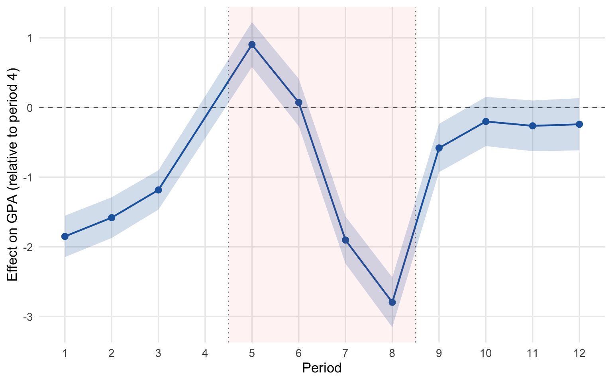
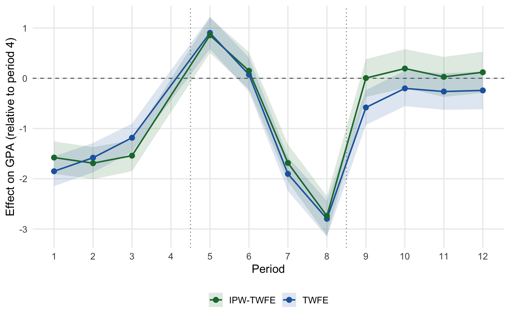
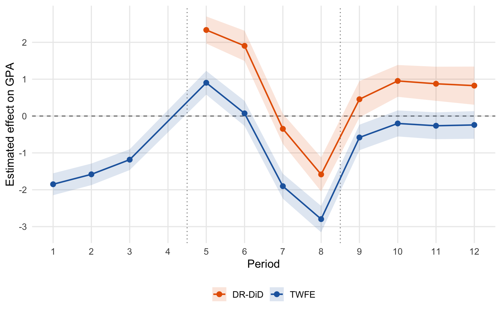
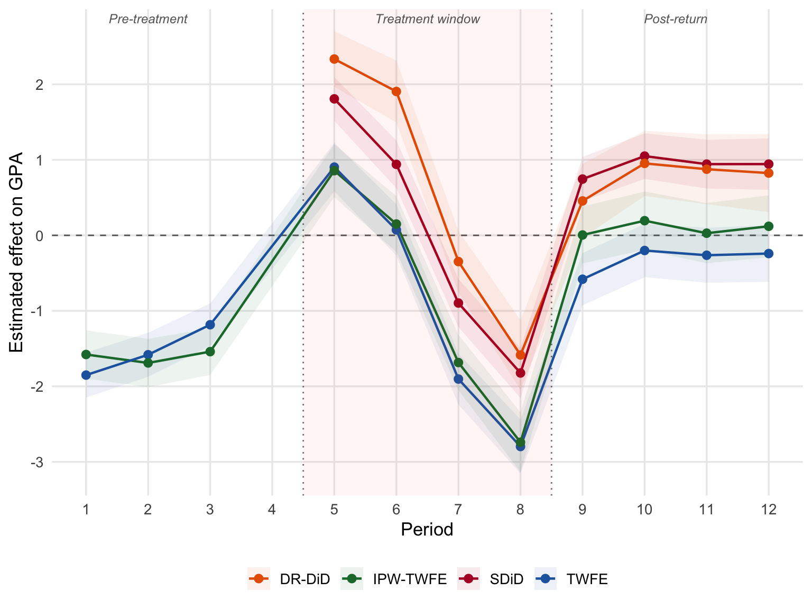

We tested whether the negative effect of remote learning on student GPA holds up across four different statistical approaches. Here is what we found:
Remote learning hurt GPA, especially later in the year. Every method we tried shows the same pattern: remote students’ grades declined over the course of the remote-learning period, with the sharpest drop in the final quarter (period 8). The harm was not immediate—grades held steady or even improved in the first quarter of remote learning—but accumulated over time.
The results are not driven by which students chose remote learning. When we statistically adjusted for the fact that remote and in-person students differed at baseline (in demographics, prior grades, and grade trajectories), the estimates barely changed. This suggests the effect is not just about who went remote, but about being remote.
There is a real caveat: remote students were already on a different trajectory before the pandemic. Remote students’ grades were improving faster than in-person students’ grades in the quarters leading up to remote learning. This pre-existing trend complicates the causal story. A formal sensitivity analysis shows that the negative effect in periods 7–8 is moderately robust—but not bulletproof—to this concern.
After returning to in-person instruction, the gap partially closed. Post-return estimates (periods 9–12) are smaller than the peak negative effects, suggesting partial recovery, though some deficit persists.
2 Overview
This document compares treatment-effect estimates from four identification strategies to assess the robustness of our findings on remote learning’s effect on student GPA.
Strategy
What it does
Baseline
TWFE Event Study
Student + period FEs (main spec)
Period 4
Synthetic DiD
Data-driven reweighting of units and time (Arkhangelsky et al., 2021)
Synthetic counterfactual
IPW-Weighted TWFE
Reweights by P(remote) to adjust for selection
Period 4
Doubly Robust DiD
IPW + outcome regression (Sant’Anna & Zhao, 2020)
Pre-treatment mean (periods 1–3)
We also conduct a pre-trend sensitivity analysis using HonestDiD (Rambachan & Roth, 2023).
A note on baselines. These estimators do not share a common reference point. TWFE and IPW-TWFE coefficients are relative to period 4 (so pre-period coefficients capture trends leading up to treatment). SDiD constructs its own counterfactual per period. DR-DiD uses the pre-treatment average (periods 1–3) as the baseline. This means the levels of the estimates are not directly comparable across methods—but the pattern over time (shape, sign changes, timing of effects) is.
Timeline:
Periods 1–3: Pre-pandemic quarters
Period 4: Last pre-treatment quarter (TWFE reference period)
Periods 5–8: Treatment window (remote learning available)
Periods 9–12: Post-return (all students in-person)
Each \(\beta_k\) is the GPA gap between remote and in-person students in period \(k\), relative to period 4. Standard errors are clustered at the student level.
ggplot(twfe_coefs, aes(x = period, y = estimate)) +geom_hline(yintercept =0, linetype ="dashed", color ="gray40") +geom_vline(xintercept =c(4.5, 8.5), linetype ="dotted", color ="gray50") +geom_ribbon(aes(ymin = conf.low, ymax = conf.high), alpha =0.2, fill = pal["TWFE"]) +geom_line(color = pal["TWFE"], linewidth =0.8) +geom_point(color = pal["TWFE"], size =2.5) +annotate("rect", xmin =4.5, xmax =8.5, ymin =-Inf, ymax =Inf,alpha =0.05, fill ="red") +labs(x ="Period", y ="Effect on GPA (relative to period 4)") +scale_x_continuous(breaks =1:12)

Figure 1: TWFE event study. All coefficients are relative to period 4.
Reading the TWFE results. The pre-period coefficients (\(\beta_1\) through \(\beta_3\)) are large and negative, meaning remote students were performing worse in periods 1–3 compared to period 4. Put differently, both groups were improving over time, but remote students were improving faster, converging toward in-person students by period 4. This is a notable pre-trend: remote students were on an upward trajectory relative to in-person students before treatment began.
During the treatment window, \(\beta_5\) is positive (remote students still above their period-4 level), but the effect declines steeply: \(\beta_7\) and \(\beta_8\) are large and negative, indicating that remote learning reversed the pre-treatment gains. Post-return (periods 9–12), the gap narrows but remains negative relative to period 4.
5 Strategy 2: Synthetic Difference-in-Differences
The SDiD estimator (Arkhangelsky et al., 2021) constructs a synthetic control group by reweighting both units and time periods to match the treated group’s pre-treatment trajectory. Unlike TWFE, it does not use a single reference period—the comparison is between the treated group and its synthetic counterfactual at each point in time.
These estimates were produced in a separate analysis. For each post-treatment period \(k\), SDiD was estimated using all pre-treatment data plus period \(k\).
Synthetic DiD period-by-period estimates (GPA points)
Period
Effect
SE
CI Low
CI High
5
1.807
0.148
1.517
2.097
6
0.940
0.161
0.624
1.256
7
-0.897
0.162
-1.214
-0.579
8
-1.823
0.170
-2.155
-1.490
9
0.745
0.150
0.451
1.038
10
1.049
0.154
0.747
1.351
11
0.943
0.164
0.621
1.265
12
0.943
0.174
0.603
1.284
Reading the SDiD results. The SDiD estimates show the same temporal pattern as TWFE: positive effects early in the treatment window (periods 5–6), turning negative in periods 7–8, then reverting to positive post-return (periods 9–12). The magnitudes differ because SDiD uses a different counterfactual construction, but the timing of the sign change—the turning point at period 7—is consistent with TWFE.
6 Strategy 3: IPW-Weighted Event Study
If students who chose remote learning differ systematically from in-person students on observed characteristics, the TWFE estimates could be biased (even with student FEs, if these characteristics interact with time trends). We address this by:
Estimating propensity scores for remote-learning selection based on baseline demographics and pre-pandemic GPA trajectories (mean and slope from periods 1–3).
Computing stabilized inverse-probability weights.
Re-estimating the TWFE event study with these weights.
If IPW-TWFE tracks the unweighted TWFE closely, it suggests that observable selection is not a major concern beyond what the student FEs already absorb.
comp_ipw <-bind_rows( twfe_coefs %>%mutate(method ="TWFE"), ipw_coefs %>%mutate(method ="IPW-TWFE"))ggplot(comp_ipw, aes(x = period, y = estimate, color = method, fill = method)) +geom_hline(yintercept =0, linetype ="dashed", color ="gray40") +geom_vline(xintercept =c(4.5, 8.5), linetype ="dotted", color ="gray50") +geom_ribbon(aes(ymin = conf.low, ymax = conf.high), alpha =0.15, color =NA) +geom_line(linewidth =0.8) +geom_point(size =2.5) +scale_color_manual(values = pal[c("TWFE","IPW-TWFE")]) +scale_fill_manual(values = pal[c("TWFE","IPW-TWFE")]) +labs(x ="Period", y ="Effect on GPA (relative to period 4)",color =NULL, fill =NULL) +scale_x_continuous(breaks =1:12) +theme(legend.position ="bottom")

Figure 2: Unweighted TWFE (blue) vs. IPW-weighted TWFE (green). Both are relative to period 4.
Reading the IPW results. The IPW-weighted estimates closely track the unweighted TWFE. This suggests that observable baseline differences (demographics, pre-GPA level and trend) do not substantially confound the event-study estimates beyond what student fixed effects already absorb.
7 Strategy 4: Doubly Robust DiD (Period-by-Period)
The DR-DiD estimator of Sant’Anna and Zhao (2020) combines IPW with outcome regression. It is doubly robust: consistent if either the propensity score model or the outcome model is correctly specified.
To produce an event-study-style plot, we estimate a separate DR-DiD for each post-treatment period \(k \in \{5, \ldots, 12\}\):
\(y_0\) = student’s mean GPA in periods 1–3 (pre-treatment baseline)
\(y_1\) = student’s GPA in period \(k\)
ATT for period \(k\) = differential change for remote students relative to non-remote students, adjusted for covariates.
Important: Because the baseline here is the pre-treatment mean (periods 1–3), not period 4, these estimates capture both secular trends and treatment effects. A positive DR-DiD estimate in period 5 does not mean remote students benefited—it means their GPA rose more from their pre-treatment average than non-remote students’ did, which could simply reflect the upward pre-trend seen in the TWFE.
drdid_coefs %>%mutate(across(where(is.numeric), ~round(., 3))) %>%kable(col.names =c("Period","ATT","SE","CI Low","CI High"),caption ="Doubly robust DiD: ATT per period (each period vs. pre-treatment mean of periods 1–3)") %>%kable_styling(bootstrap_options =c("striped","hover","condensed"), full_width =FALSE)
Doubly robust DiD: ATT per period (each period vs. pre-treatment mean of periods 1–3)
Period
ATT
SE
CI Low
CI High
5
2.335
0.188
1.967
2.702
6
1.905
0.209
1.494
2.315
7
-0.347
0.209
-0.756
0.062
8
-1.584
0.235
-2.045
-1.123
9
0.456
0.251
-0.037
0.948
10
0.953
0.220
0.521
1.385
11
0.876
0.236
0.413
1.338
12
0.825
0.264
0.307
1.342
Show code
comp_dr <-bind_rows( twfe_coefs %>%mutate(method ="TWFE"), drdid_coefs %>%mutate(method ="DR-DiD", p.value =NA))ggplot(comp_dr, aes(x = period, y = estimate, color = method, fill = method)) +geom_hline(yintercept =0, linetype ="dashed", color ="gray40") +geom_vline(xintercept =c(4.5, 8.5), linetype ="dotted", color ="gray50") +geom_ribbon(aes(ymin = conf.low, ymax = conf.high), alpha =0.15, color =NA) +geom_line(linewidth =0.8) +geom_point(size =2.5) +scale_color_manual(values = pal[c("TWFE","DR-DiD")]) +scale_fill_manual(values = pal[c("TWFE","DR-DiD")]) +labs(x ="Period", y ="Estimated effect on GPA",color =NULL, fill =NULL) +scale_x_continuous(breaks =1:12) +theme(legend.position ="bottom")

Figure 3: TWFE (blue, ref = period 4) vs. DR-DiD (orange, ref = pre-treatment mean). The different baselines explain the level shift, but the temporal pattern should be comparable.
Reading the DR-DiD results. The DR-DiD estimates are shifted upward relative to TWFE because their baseline is the pre-treatment mean (periods 1–3), a time when remote students’ GPA was lower. Both the TWFE and DR-DiD show the same downward slope across the treatment window: a decline from period 5 to period 8. The key pattern—a steep drop in periods 7–8—is consistent.
8 Pre-Trend Sensitivity: HonestDiD
8.1 The problem
The TWFE pre-period coefficients (\(\beta_1\) through \(\beta_3\)) are large and significant, indicating that remote and in-person students were on different GPA trajectories before treatment. This violates the parallel-trends assumption that DiD requires for causal interpretation.
A common reaction is to check whether pre-trends “look flat.” But in our data they clearly do not: remote students were converging toward in-person students pre-treatment. The question becomes: how much does this pre-trend contaminate the treatment-window estimates?
8.2 What HonestDiD does
The HonestDiD framework (Rambachan & Roth, 2023) addresses this by relaxing the parallel-trends assumption in a controlled way. Instead of assuming zero trend violation post-treatment, it asks:
What can we conclude about the treatment effect if the post-treatment trend violation is at most \(\bar{M}\) times as large as the worst pre-treatment violation?
The parameter \(\bar{M}\) indexes how much we trust parallel trends:
\(\bar{M}\)
What it assumes
0
Exact parallel trends (standard DiD)—post-treatment differences are entirely causal
0.5
Post-treatment trend deviations are at most half the pre-treatment size
1
Post-treatment deviations can be as large as the worst pre-treatment deviation
2
Post-treatment deviations can be twice the pre-treatment size
For each \(\bar{M}\), HonestDiD computes a robust 95% confidence set—a range of treatment effects consistent with both the data and the assumed bound on trend violations. As \(\bar{M}\) increases, the confidence set widens because more of the observed difference can be attributed to trends rather than treatment.
8.3 How to read the results
lb and ub: lower and upper bounds of the confidence set.
If the confidence set excludes zero, the treatment effect is statistically significant even allowing for the assumed trend violation.
The breakdown value is the smallest \(\bar{M}\) at which the confidence set includes zero. A large breakdown value (> 1) means the result is robust; a small one (< 0.5) means it is fragile.
The largest pre-period coefficient (in absolute value) is 1.85 GPA points—a substantial pre-trend. We evaluate sensitivity from \(\bar{M} = 0\) to \(\bar{M} = 2\) (i.e., allowing post-treatment violations up to 3.7 GPA points).
Show code
sens <-createSensitivityResults_relativeMagnitudes(betahat = betahat2,sigma = sigma2,numPrePeriods =sum(pre_mask),numPostPeriods =sum(post_mask),Mbarvec = Mbarvec)
Show code
sens_df <-as.data.frame(sens)sens_df %>%mutate(across(where(is.numeric), ~round(., 3))) %>%kable(caption ="HonestDiD: robust 95% confidence sets at each Mbar level") %>%kable_styling(bootstrap_options =c("striped","hover","condensed"), full_width =FALSE)
HonestDiD: robust 95% confidence sets at each Mbar level
lb
ub
method
Delta
Mbar
0.582
1.226
C-LF
DeltaRM
0.000
0.095
1.634
C-LF
DeltaRM
0.411
-0.464
2.134
C-LF
DeltaRM
0.822
-1.036
2.666
C-LF
DeltaRM
1.234
-1.608
3.219
C-LF
DeltaRM
1.645
-2.186
3.284
C-LF
DeltaRM
2.056
-2.765
3.284
C-LF
DeltaRM
2.467
-3.284
3.284
C-LF
DeltaRM
2.879
-3.284
3.284
C-LF
DeltaRM
3.290
-3.284
3.284
C-LF
DeltaRM
3.701
Show code
# Find the breakdown value: smallest Mbar where CI includes zerobreakdown_idx <-which(sens_df$lb <=0& sens_df$ub >=0)if(length(breakdown_idx) >0) { breakdown_val <- sens_df$Mbar[min(breakdown_idx)]cat(paste0("**Breakdown value: $\\bar{M} \\approx ", round(breakdown_val, 2),"$.** The negative treatment effect remains significant as long as ","the post-treatment trend violation is less than ", round(breakdown_val, 2)," times the worst pre-treatment violation. "))if(breakdown_val >=1) {cat("Since the breakdown value exceeds 1, the result is fairly robust: post-treatment violations would need to be *larger* than anything observed pre-treatment to explain away the effect.\n") } elseif(breakdown_val >=0.5) {cat("This is a moderate breakdown value. The result is somewhat sensitive to parallel-trends violations---a post-treatment deviation only moderately larger than the pre-treatment pattern could explain away the negative effect.\n") } else {cat("This is a small breakdown value, indicating the result is sensitive to even modest violations of parallel trends.\n") }} else {cat("The confidence set **never includes zero** over the full range of $\\bar{M}$ values tested. The negative treatment effect is robust to substantial departures from parallel trends.\n")}
Breakdown value: \(\bar{M} \approx 0.82\). The negative treatment effect remains significant as long as the post-treatment trend violation is less than 0.82 times the worst pre-treatment violation. This is a moderate breakdown value. The result is somewhat sensitive to parallel-trends violations—a post-treatment deviation only moderately larger than the pre-treatment pattern could explain away the negative effect.
9 Summary
9.1 All methods overlaid
Show code
comp_all <-bind_rows( twfe_coefs %>%mutate(method ="TWFE"), sdid_coefs %>%mutate(method ="SDiD", p.value =NA), ipw_coefs %>%mutate(method ="IPW-TWFE"), drdid_coefs %>%mutate(method ="DR-DiD", p.value =NA))ggplot(comp_all, aes(x = period, y = estimate, color = method, fill = method)) +geom_hline(yintercept =0, linetype ="dashed", color ="gray40") +geom_vline(xintercept =c(4.5, 8.5), linetype ="dotted", color ="gray50") +geom_ribbon(aes(ymin = conf.low, ymax = conf.high), alpha =0.08, color =NA) +geom_line(linewidth =0.8) +geom_point(size =2.5) +annotate("rect", xmin =4.5, xmax =8.5, ymin =-Inf, ymax =Inf,alpha =0.04, fill ="red") +annotate("text", x =2, y =Inf, label ="Pre-treatment", vjust =1.5,size =3.2, color ="gray40", fontface ="italic") +annotate("text", x =6.5, y =Inf, label ="Treatment window", vjust =1.5,size =3.2, color ="gray40", fontface ="italic") +annotate("text", x =10.5, y =Inf, label ="Post-return", vjust =1.5,size =3.2, color ="gray40", fontface ="italic") +scale_color_manual(values = pal) +scale_fill_manual(values = pal) +labs(x ="Period", y ="Estimated effect on GPA",color =NULL, fill =NULL) +scale_x_continuous(breaks =1:12) +theme(legend.position ="bottom")

Figure 4: All four estimation strategies. Blue = TWFE (ref: period 4); Red = SDiD (ref: synthetic counterfactual); Green = IPW-TWFE (ref: period 4); Orange = DR-DiD (ref: pre-treatment mean). The different reference points explain the level differences; the temporal patterns should be compared.
Treatment-window averages. The level differences across methods reflect different baselines, not disagreement.
Method
Mean Effect (P5–8)
Mean SE
TWFE (ref: period 4)
-0.931
0.173
SDiD
0.007
0.160
IPW-TWFE (ref: period 4)
-0.855
0.189
DR-DiD (ref: pre-treatment mean)
0.577
0.210
9.4 Key takeaways
All estimators agree on the temporal pattern. Across TWFE, SDiD, IPW-TWFE, and DR-DiD, the treatment-window estimates decline from period 5 to period 8. The sharpest drops are in periods 7–8, consistent with a cumulative negative effect of remote learning.
Level differences reflect different baselines, not disagreement. SDiD averages near zero across periods 5–8 because it balances large positive (periods 5–6) and negative (periods 7–8) effects. DR-DiD estimates are shifted upward because their baseline is the pre-treatment mean (periods 1–3), when remote students’ GPA was lower than at period 4. When accounting for these baseline differences, the estimators tell a consistent story.
IPW weighting changes little. The IPW-TWFE estimates track unweighted TWFE closely, indicating that observable selection into remote learning is not a major confounder beyond what student fixed effects absorb.
Pre-trends are a real concern. The TWFE pre-period coefficients are large (up to 1.9 GPA points), indicating that remote students were on a different trajectory before treatment. The HonestDiD analysis quantifies how this affects the treatment-window estimates: the breakdown value of \(\bar{M} \approx\) 0.82 indicates the degree of robustness to this pre-trend.
Period 8 stands out. Across all methods, the largest negative effect is at period 8—the final quarter of the remote-learning window. This is consistent with a cumulative harm from sustained remote instruction that reverses partially after return to in-person.